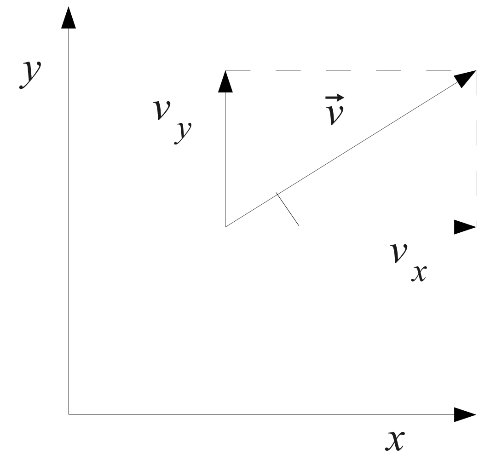

Fisica 2026
Introduzione
Fisica: descrizione dei fenomeni naturali attraverso modelli matematici.
Grandezze fisiche: entità osservabili nei fenomeni naturali a cui è possibile associare quantità matematiche.
Legge fisica: relazione tra almeno due grandezze fisiche
Cinematica
Concetti fondamentali
moto: variazione di posizione nel tempo di un corpo rispetto ad altri corpi considerati fissi
sistema di riferimento: usato per descrivere il moto di un corpo
traiettoria: linea descritta da un punto materiale durante il suo moto
Legge oraria: relazione fra il tratto di traiettoria percorso \(s\) e il tempo \(t\)
Il tratto di traiettoria percorso durante un moto è una quantità vettoriale detta spostamento \(s\)
Velocità
velocità scalare media: rapporto tra lo spazio percorso \(s\) e l’intervallo di tempo \(t\) impiegato a percorrerlo
\[ v_m = \frac{s(t_2)-s(t_1)}{t_2-t_1} \]
velocità istantanea: limite della velocità media per \(t_2 \to t_1\)
\[
v = \lim_{\Delta t \to 0} \frac{s(t + \Delta t)-s(t)}{\Delta t} = \frac{ds}{dt}
\]
la velocità istantanea è la tangente
Calcolo dimensionale della velocità:
\[ [V] = \frac{[L]}{[T]} \]

\[ \vert \vec{v} \vert = \sqrt{v_x^2 + v_y^2} \]
\[ \text{componente orizzontale } = \vert \vec{v_x} \vert = \vert \vec{v} \vert \cos \alpha \]
\[ \text{componente verticale } = \vert \vec{v_y} \vert = \vert \vec{v} \vert \sin \alpha \]
Accelerazione
variazione nel tempo della velocità
accelerazione media: rapporto tra la variazione di velocità \(\Delta v\) e l’intervallo di tempo \(\Delta t\) in cui avviene
\[ \vec{a_m} = \frac{\vec{v}(t_2)-\vec{v}(t_1)}{t_2-t_1} \]
accelerazione istantanea: limite dell’accelerazione media per \(t_2 \to t_1\)
\[ \vec{a} =\frac{d\vec{v(t_1)}}{dt} \]
calcolo dimensionale dell’accelerazione:
\[ [L][T]^{-2} \]
Moti notevoli
moto rettilineo: la direzione della velocità è costante e coincidente con la traiettoria
moto curvilineo: il vettore accelerazione non è tangente alla traiettoria, ovvero possiede una componente, detta normale, perpendicolare alla traiettoria
Moto rettilineo uniforme
traiettoria rettilinea
\(v\) costante in modulo
\(a = 0\)
legge oraria: \[x = x_0 + v_0t\]
Moto rettilineo uniformemente accelerato
- corpo parte da fermo e si muove in linea retta
- \(a\) costante in modulo e direzione
- velocità varia soltanto in modulo
Se corpo non parte da fermo, l’importante è che \(v_0\) abbia la stessa direazione di \(a\).
\[ v = v_0 + at \]
Legge oraria:
\[ x = x_0 + v_0t + \frac{1}{2}at^2 \]
- grafico spazio-tempo: parabola
- grafico velocità-tempo: retta con coefficiente angolare \(a\)
Moto circolare uniforme
Moto di un punto \(P\) che si muove a velocità \(v\) con modulo costante e direzione variabile.
velocità lineare periferica: velocità con cui \(P\) si muove lungo la circonferenza
velocità angolare \(w\): velocità di rotazione del raggio \(R\) nel seguire \(P\)
per definizione
\[ w = \frac {\Delta \theta}{\Delta t} \]
velocità lineare periferica:
\[ v = wR \]
accelerazione:
\[ a = v \omega = \frac{v^2}{R} = w^2 R \]
accelerazione normale o centripeta: direzione perpendicolare alla traiettoria, verso il centro della circonferenza
Moto armonico
moto di un punto che percorre avanti e indietro con periodicità un segmento
legge oraria:
\[ x = A \sin (\omega t + \phi) \]
con:
- \(A\): ampiezza del moto
- \(\omega\): pulsazione del moto
- \(\phi\): fase iniziale del moto
La pulsazione \(\omega\) è legata alla frequenza del moto, definita come numero di cicli per secondo:
\[ \omega = 2 \pi f \]
L’inverso della frequenza è il periodo del moto, ovvero il tempo necessario a compiere un ciclo completo:
\[ T = \frac{1}{f} = \frac{2 \pi}{\omega} \]
Dinamica
Forze e leggi di Newton
studio del moto in relazione alle cause che lo generano, ovvero le forze (grandezze vettoriali)
Posso causare:
- variazione dello stato di moto (corpo non vincolato), misurata con metodo dinamico
- deformazione (corpo vincolato), misurata con metodo statico
principio di relatività galileiana: le leggi fisiche sono invarianti nei sistemi di riferimento inerziali
- principio di inerzia: ogni corpo persiste nel suo stato di quiete o di moto rettilineo uniforme a meno che non sia costretto a cambiare stato da forze applicate
- principio fondamentale della dinamica: la forza agente imprime al moto un’accelerazione proporzionale ad essa, con costante di proporzionalità pari alla massa del corpo
\[ \vec{F} = m \vec{a} \]
- principio di azione e reazione: a ogni forza di azione corrisponde una forza di reazione uguale in modulo, opposta in direzione e applicata su un corpo diverso
Newton (N): unità di misura statica di forza, 1 Newton è la forza che imprime a un corpo di massa 1 kg un’accelerazione di 1 \(m/s^2\)
Diagramma corpo libero: rappresentazione grafica delle forze che agiscono su un corpo
Quantità di moto
quantità di moto: prodotto tra massa e velocità di un corpo
\[ \vec{p} = m \vec{v} \]
Teorema della conservazione della quantità di moto: in un sistema isolato, la quantità di moto totale è costante
Dato che $ p = m v$, possiamo riscrivere il secondo principio della dinamica come:
\[ \vec{F} = \frac{d\vec{p}}{dt} \]
Quando agiscono forze esterne la variazione della quantità di moto nel tempo è uguale alla risultante delle forze esterne
Termodinamica
Elettromagnetismo
Elettrostatica
I fenomeni elettrici dipendono dalla propietà della materia di possedere carica elettrica, che può essere positiva o negativa.
- attrazione tra cariche di segno opposto
- repulsione tra cariche di segno uguale
Principio di conservazione della carica elettrica: carica elettrica di una quantità di materia è uguale alla somma algebrica delle cariche elementari che la costituiscono
Legge di Coulomb
(copilot) La forza elettrostatica tra due cariche puntiformi è direttamente proporzionale al prodotto delle cariche e inversamente proporzionale al quadrato della distanza che le separa:
\[ \vec{F} = K \frac{q_1 q_2}{r^2} \frac{\vec{r}}{r} \]
Coulomb (C): carica posta nel vuoto a distanza di 1 metro da una carica uguale ad essa
\[ K = 8.99 \times 10^9 \frac{N \cdot m^2}{C^2} \]
Si può anche riscrivere analogamente come:
\[ K = \frac{1}{4 \pi \epsilon_0} \qquad \epsilon_0 = 8.85 \times 10^{-12} \frac{C^2}{N \cdot m^2} \]
Legge di Coulomb nei mezzi materiali
Le interazioni sono attenuate dalla costante dialettrica relativa che dipende dal materiale del mezzo dialettrico
\[ \vec{F} = \frac{K}{\epsilon_r} \frac{q_1 q_2}{r^2} \frac{\vec{r}}{r} \]
Nel vuoto vale \(\epsilon_r = 1\), mentre nei materiali \(\epsilon_r > 1\).
Unità di misura dell’elettrostatica
Ampere (A): unità di misura della corrente
Coulomb (C): unità di misura della carica elettrica.
1 Coulomb = quantità di carica trasportata in 1 secondo da una corrente di 1 Ampere
carica elementare: \(1.6 \times 10^{-19} C\)
costante dialettrica del vuoto: \(\epsilon_0 = 8.85 \times 10^{-12} \frac{C^2}{N \cdot m^2}\)
Elettrostatica e corpi
forze elettriche sono più intense tra cariche elementari, in quanto le masse macroscopiche sono tendenzialmente elettricamente neutre
Campo elettrico
campo di forze: regione dello spazio dove agiscono forze note in ogni punto
campo di forze elettrico è esprimibile come prodotto della carica q per un campo vettoriale detto campo elettrico.
Il vettore intensità del campo elettrico :
\[ \vec{E} = \frac{\vec{F}}{q} = \frac{1}{4 \pi \epsilon_0 \epsilon} \frac{Q}{r^2} ( \frac{\vec{r}}{r} ) \]
con
- \(E\): intensità del campo elettrico
- direzione coincide con quella della forza
- verso coincide solo se \(q\) è positiva
- \(\vec{F}\): forza elettrica che agisce su una carica di prova
- \(q\): carica di prova
Nel caso che il campo elettrico sia generato da una moltitudine di cariche, il vettore \(E\) è dato dalla somma vettoriale dei campi elettrici generati da ciascuna carica
Campo elettrostatico e energia potenziale
campo elettrostatico: campo che non varia nel tempo. È conservativo (il lavoro compiuto per spostare una carica tra due punti è indipendente dal percorso seguito)
Essendo conservativo, è possibile definire una funzione energia potenziale \(U(r)\) che caratterizza il campo.
\[ U(\vec{r}) = \frac{Qq}{4 \pi \epsilon_0 \epsilon} \frac{1}{r} \]
Dividendo per la carica di prova \(q\) otteniamo il potenziale elettrico:
\[ V(\vec{r}) = \frac{U(\vec{r})}{q} = \frac{Q}{4 \pi \epsilon_0 \epsilon} \frac{1}{r} \]
Se il campo è generato da una sola carica lo definiamo monopolo
Tabella riassuntiva per una carica q
\[ \begin{matrix} \vec{F} = \frac{1}{4 \pi \epsilon_0 \epsilon} \frac{Qq}{r^2} ( \frac{\vec{r}}{r} ) & \vec{E} = \frac{1}{4 \pi \epsilon_0 \epsilon} \frac{Q}{r^2} (\frac{\vec{r}}{r} ) \\ U(\vec{r}) = \frac{Qq}{4 \pi \epsilon_0 \epsilon} \frac{1}{r} & V(\vec{r}) = \frac{Q}{4 \pi \epsilon_0 \epsilon} \frac{1}{r} \end{matrix} \]
Differenza potenziale elettrico
potenziale elettrico: due definizioni
- grandezza intensiva corrispondente all’energia potenziale elettrostatica
- grandezza scalare collegata al campo elettrostatico
differenza di potenziale elettrico \(\Delta V\): lavoro compiuto per spostare una carica di prova \(q\) tra due punti A e B del campo elettrostatico
\[ \Delta V = V(B) - V(A) = \frac{U(B)-U(A)}{q} = \frac{L_{AB}}{q} \]
L’unità di misura del potenziale elettrico è il Volt (V)
elettron-volt (eV): energia cinetica acquisita da un elettrone accelerato da una differenza di potenziale di 1 Volt. Corrisponde a \(1.6 \times 10^{-19} J\)
Teorema di Gauss
Il flusso elettrico totale attraverso una superficie chiusa è uguale al prodotto della carica totale all’interno della superficie per la costante \(\frac{1}{4\pi\epsilon_0\epsilon}\)
flusso elettrico: grandezza scalare che rappresenta numericamente il flusso del vettore \(\vec{E}\) per una superficie attraversata da linee di forza del campo elettrico
(… slide 30 elettricità)
Capacità di un conduttore
materiali conduttori: materiali con cariche libere che propagano una perturbazione elettrica
materiali isolanti o dialettrici: materiali che non contengono cariche libere
materiali semiconduttori: materiali che hanno un comportamento intermedio, se drogati forniscono cariche di un solo segno
Il punto con minor potenziale in un conduttore è la superficie esterna, dove agiscono due componenti:
- componente nella direzione della superficie, che è nulla (o le cariche si sposterebbero lungo la superficie)
- componente ortogonale, generalmente diversa da zero
Pertanto il flusso corrisponde a
\[ \Phi (\vec{E})= E_{out} \Delta S \]
mentre il teorema di Gauss ci dice che
\[ \Phi (\vec{E}) = \frac{Q}{\epsilon_0 \epsilon} = \frac{1}{\epsilon_0 \epsilon} \sigma \Delta S \]
in cui \(Q\) è espresso in funzione della densità superficiale di carica \(\sigma\).
Ne consegue
\[ E_{out} = \frac{\sigma}{\epsilon_0 \epsilon} \]
Il potenziale raggiunto dal conduttore rappresenta lavoro svolto per portare una carica dall’infinito alla superficie del conduttore. Indichiamo pertanto la capacità del conduttore \(C\):
\[ C = \frac{Q}{V} \]
Il farad è l’unità di misura della capacità. 1 farad è la capacità di un conduttore che, portato a una differenza di potenziale di 1 Volt, accumula una carica di 1 Coulomb.
Condensatori
un condensatore è un insieme formato da due armature conduttrici affacciate a distanza \(d\) e separate da un materiale isolante
In caso di presenza di due cariche uguali e opposte sulle armature, si genera una differenza di potenziale \(\Delta v\)
La capacità elettrica di un condensatore è data da
\[ C = \frac{Q}{\Delta V} \]
La densità di carica \(\sigma\) dipende ovviamente dalla superficie \(S\) delle armature:
\[ \sigma = \frac{Q}{S} \]
Dal teorema di Gauss
\[ ES = \frac{\sigma S}{\epsilon_0 \epsilon} \implies E = \frac{\sigma}{\epsilon_0 \epsilon} \]
Differenza di potenziale tra le armature è il lavoro per unità di carica per spostare una carica da un’armatura all’altra:
\[ \Delta V = \frac{L}{q} = \frac{qEd}{q} = \frac{\sigma d}{\epsilon_0 \epsilon_r} = Q \frac{d}{S} \frac{1}{\epsilon_0 \epsilon_r S} \]
Da cui segue la capacità del condensatore:
\[ C = \epsilon_0 \epsilon_r \frac{S}{d} \]
condensatore cilindrico: due cilindri conduttori di lunghezza \(l\) e raggi \(r+d\) e \(r-d\) con \(d << r\) la capacità si esprime:
\[ C = \epsilon_0 \epsilon_r \frac{2 \pi r l}{d} \]
Condensatori in serie e in parallelo
Collegamento in serie:
\[ V_A - V_B = \Delta V_1 + \Delta V_2 = \frac{Q}{C_1} + \frac{Q}{C_2} = Q \left( \frac{1}{C_1} + \frac{1}{C_2} \right) \]
\[ \frac{1}{C_{eq}} = \frac{1}{C_1} + \frac{1}{C_2} \]
Collegamento in parallelo:
\[ Q = Q_1 + Q_2 = C_1 \Delta V + C_2 \Delta V = (C_1 + C_2) \Delta V \]
\[ C_{eq} = C_1 + C_2 \]